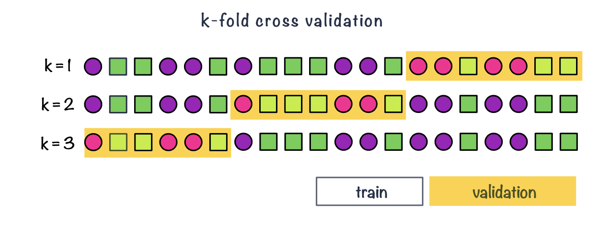

flowchart TD A(Machine learning) --> B(unsupervised learning) A --> C(supervised learning)
Supervised learning
We will discuss
- What supervised learning is.
- Data splitting.
- How to evaluate classification models.
- How to put together a minimum working example of supervised learning with KNN classifier.
What is supervised learning
Definition
- Supervised learning can be used for classification and regression.
What is supervised learning?

- In supervised learning we are using sample labels to train (build) a model.
- We then use the trained model for interpretation and prediction.
What is supervised learning?
Definition
- Training a model means selecting the best values for the model attributes (algorithm parameters) that allow linking the input data with the desired output task (classification or regression).
- Common supervised machine learning algorithms include:
- K-Nearest Neighbor (KNN), Support Vector Machines (SVM), Random Forest (RF) or Artificial Neural Networks (ANN).
- Many of the ML methods can be implemented to work both for classifying samples and forecasting numeric outcome.
Supervised learning
Outline
Common steps:
- deciding on the task: classification or regression
- splitting data to keep part of data for training and part for testing
- selecting supervised machine learning algorithms
- deciding on the training strategy, i.e. which performance metrics to use
- running feature engineering
- performing feature selection
Supervised learning
Outline
Common steps:
- deciding on the task: classification or regression
- splitting data to keep part of data for training and part for testing
- selecting supervised machine learning algorithms, e.g. k-nearest neighbor
- deciding on the training strategy, i.e. which performance metrics to use
- running feature engineering
- performing feature selection
Classification
Classification
Definition
- Classification methods are algorithms used to categorize objects.
- Let’s for each observations \(i\) collect pair of information \(\{\mathbf{x_i}, g_i\}\)
- where \(\{\mathbf{x_i}\}\) is a set of exploratory variables e.g. a gene expression data
- and \(g_i \in \{1, \dots, G\}\) is the class label for each observation (known), e.g. cancer stage I, II, III or IV
- Then we want to find a classification rule \(f(.)\) (model) such that \[f(\mathbf{x_i})=g_i\]
KNN (algorithm)
KNN
example of a classification algorithm

KNN
example of a classification algorithm


KNN
Algorithm
- Decide on the value of \(k\).
- Calculate the distance between the query-instance (observations for new sample) and all the training samples.
- Sort the distances and determine the nearest neighbors based on the \(k\)-th minimum distance.
- Gather the categories of the nearest neighbors.
- Use majority voting of the categories of the nearest neighbors as the prediction value for the new sample.
Data splitting
Data splitting
Why
- Part of the issue of fitting complex models to data is that the model can be continually tweaked to adapt as well as possible.
- As a result the trained model may not generalize well on future data due to the added complexity that only works for a given unique data set, leading to overfitting.
- To deal with overconfident estimation of future performance we can implement various data splitting strategies.
Data splitting
train, validation & test sets

- Training data: this is data used to fit (train) the classification or regression model, i.e. derive the classification rule.
- Validation data: this is data used to select which parameters or types of model perform best, i.e. to validate the performance of model parameters.
- Test data: this data is used to give an estimate of future prediction performance for the model and parameters chosen.
- Common split strategies include 50%/25%/25% and 33%/33%/33% splits for training/validation/test respectively
Data splitting
cross validation & repeated cross validation
- In k-fold cross-validation we split data into \(k\) roughly equal-sized parts.
- We start by setting the validation data to be the first set of data and the training data to be all other sets.
- We estimate the validation error rate / correct classification rate for the split.
- We then repeat the process \(k-1\) times, each time with a different part of the data set to be the validation data and the remainder being the training data.
- We finish with \(k\) different error or correct classification rates.
- In this way, every data point has its class membership predicted once.
- The final reported error rate is usually the average of \(k\) error rates.
Data splitting
Leave-one-out cross-validation
- Leave-one-out cross-validation is a special case of cross-validation where the number of folds equals the number of instances in the data set.
Figure 1: Example of LOOCV, leave-one-out cross validation
Performance metrics
Evaluating classification
Correct (miss)classification rate
- The simplest way to evaluate in which we count for all the \(n\) predictions how many times we got the classification right. \[Correct\; Classifcation \; Rate = \frac{\sum_{i=1}^{n}1[f(x_i)=g_i]}{n}\] where \(1[]\) is an indicator function equal to 1 if the statement in the bracket is true and 0 otherwise
Missclassification Rate
Missclassification Rate = 1 - Correct Classification Rate
Evaluating classification
Confusion matrix
Confusion matrix allows us to compare between actual and predicted values. It is a N x N matrix, where N is the number of classes.
| Predicted Positive | Predicted Negative | |
|---|---|---|
| Actual Positive | True Positive (TP) | False Negative (FN) |
| Actual Negative | False Positive (FP) | True Negative (TN) |
Accuracy: measures the proportion of correctly classified samples over the total number of samples. \[ACC = \frac{TP+TN}{TP+TN+FP+FN}\]
Sensitivity: measures the proportion of true positives over all actual positive samples, i.e. how well the classifier is able to detect positive samples. It is also known as true positive rate and recall. \[TPR = \frac{TP}{TP + FN}\]
Specificity: measures the proportion of true negatives over all actual negative samples, i.e. how well the classifier is able to avoid false negatives. It is also known as true negative rate and selectivity. \[TNR = \frac{TN}{TN+FP}\]
Precision: measures the proportion of true positives over all positive predictions made by the classifier, i.e. how well the classifier is able to avoid false positives. It is also known as positive predictive value. \[PPV = \frac{TP}{TP + FP}\]
Live demo
KNN model for classification